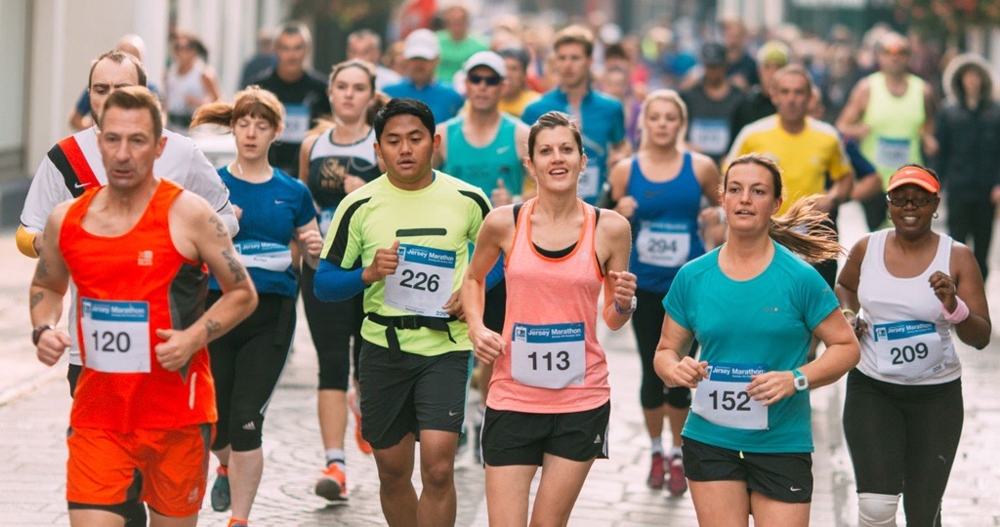
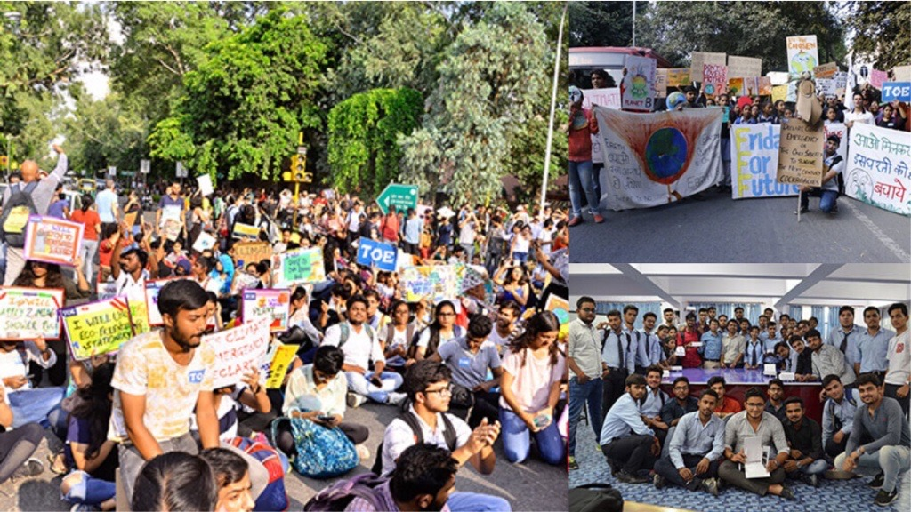
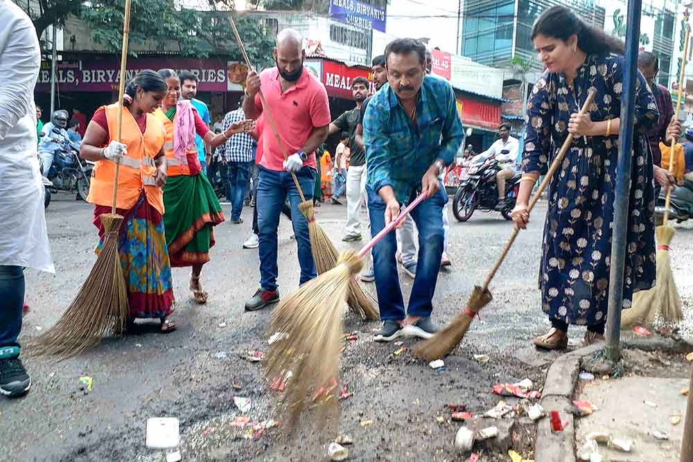

Welcome to SYN
SYN is Save Your Nature but it's also the collective of names of the people who made this website (Sarvesh, Yatharth, Naman). In English, SYN means together or united which is a characteristic required in all human beings so that we can save our Mother Earth from the devastating and destructive activities going on around the globe.
We as a community are responsible for the welfare of earth and to contribute to it's health. We organize marathons, awareness programmes, plantations and cleanliness drives to make people aware of their environment and so that they can value it more.
What We Do
Our goal is to make a difference in the thinking of people about the environment and thus we organize various events like marathons, plantations and cleanliness drives. A wise man once said, "The more you stay closer to nature, the more you will love it."
Marathons
"Marathon running offers both physical and mental health benefits. The physical benefits include losing weight, becoming fitter and eating better. Your heart beats more efficiently and in time you manage to achieve a reduction in basal heart rate that translates into less work done more efficiently by the heart. In a nutshell, with all the above benefits you will lead a longer and healthier life"
Benefits:
Support for a good cause: Many marathons benefit charities and worthwhile causes, from disaster relief to fighting cancer. Running for something that's bigger than you is a great way to stay motivated to keep training, meet other runners to train with, and make your training and races even more meaningful.
Confidence: Once you’ve logged a 20-miler, you’ll feel like you can conquer the world (after a post-run nap, of course). Your running confidence will surely overflow into other areas of your life, such as work and relationships.
Improved motivation: You can’t get away with not training when it comes to a marathon, so having one on your calendar will keep you motivated to stick to your training schedule. On days when your motivation is lacking, you'll think about how you'll feel if you're undertrained, can’t finish, or have to cancel and find the strength train anyway.
Inspiration: Whether it’s the double-amputee wheelchair racer, the 73-year-old grandmother running her 35th marathon, or your own kids holding “We love you!” signs, you'll find some inspiration around every turn.
Awareness Programmes
“Environmentalism is an ideology that evokes the necessity and responsibility of humans to respect, protect, and preserve the natural world from its anthropogenic afflictions” and “environmental awareness is to understand the fragility of our environment and the importance of its protection.”
We feel that environmental awareness make us realize the pressing need to take immediate action to stop harming the environment and start restoring the damage we have done to it. Unless there is awareness, there is no action – or at least no proper action. And this action must start from the individual level and spread through the people and organizations we know.
Benefits:
Promotes healthy lifestyle: Issues such as obesity and depression emanate from children not getting out more often. Nature has a healing power and the environmental education activities ensure that children do not laze around lying on the couch watching movies all day.
Instills respect for nature: Environmental education enables children to understand why it is necessary to respect Mother Nature, and consequently how to reap from the benefits and wonders that nature provides. For example, popular classes in Australia teaches children learn the dangers of littering garbage all over, and become more responsible individuals.
Trains on significance of being kind to nature: This includes being kind to animals and to fellow human beings. It teaches them on why it is important to treat each other well. Children learn that it is important to take care of not just the environment, but on what is on the environment as well. That includes the people around them as well as both domestic and wild animals too.
Teaches them to be responsible: The environmental education awareness program demonstrates to the people on the importance of being responsible human beings. This is both on an individual level as well as collectively as a generation.
Plantations

"Someone's sitting in the shade today because someone planted a tree a long time ago." ― Warren Buffett
Plantation plays an important role in maintaining the balance in nature. It has a great impact on the environment by reducing incidences of global warming. Deforestation( cutting down of trees) creates havoc in nature and ends up increasing the levels of greenhouse gases on earth.
Trees are the natural sources of Oxygen as they inhale Carbondioxide and exhale Oxygen and without it the survival of human beings is not possible on earth. They filter harmful pollutants from the atmosphere and provide us with fresher and cleaner air to breath. Air pollution can be controlled, if we plant more and more trees.
Benefits:
Cleaner air across the country
Cleaner water and natural filtration
Carbon sequestration: Planting trees can help to slow down the process of heat trapping of carbon dioxide in our atmosphere, resulting in a rising climate and contributing to global warming.
Controlled temperatures
Cleanliness Drives
“Cleanliness is the Hallmark of perfect standards and the best quality inspector is the conscience." - J. R. D. Tata
With the help of cleanliness, we can keep our physical and mental health clean, which will make us feel good. Cleanliness gives rise to a good character by keeping body, mind, and soul clean and peaceful. Maintaining cleanliness is the essential part of healthy living because it is the cleanliness only which helps to improve our personality by keeping clean externally and internally. It is everybody’s responsibility and one should keep themselves and their surroundings clean and hygienic. It also brings good and positive thoughts in the mind which slows down the occurrence of diseases.
Benefits:
Individual Productivity: Healthy Body results in Healthy mind which is directly proportional to Productivity of an individual. Cleanliness Drives will lead to a healthy nation which in turn increase productivity of the citizens.
Health: Unhygienic conditions is one of the major root cause of diseases / illness. Any disease or illness has financial impact both in terms of expenditure and potential revenue earning.
Clean Technology: Gradually focus on cleanliness and hygiene will shift focus towards use of clean technology i.e. non-polluting in nature. It will involve use of bio-degradable fuel and products. Any shift towards clean technology will have positive ripple effect on entire economy.
Join Us
Support us by donating funds so that we can organize more marathons, drives, programmes and make it more fun for every individual. It will also help us grow and think about more variations to provide in our initiative.
If you wish to donate, click on the link given below:
Donate
To have a look at what different events we organize for you, tap on this link:
Events
We have provided a collection of photos of our past events with the smiling faces of people who participated, have a look:
Gallery
To know about us personally, check out our About Us page, you can follow on Instagram too.
About Us